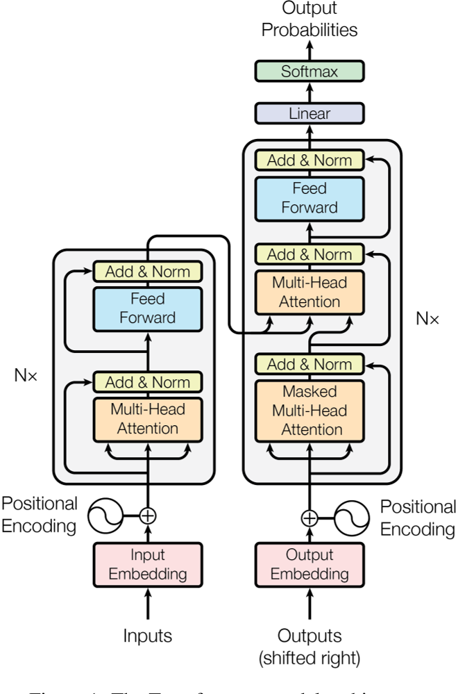
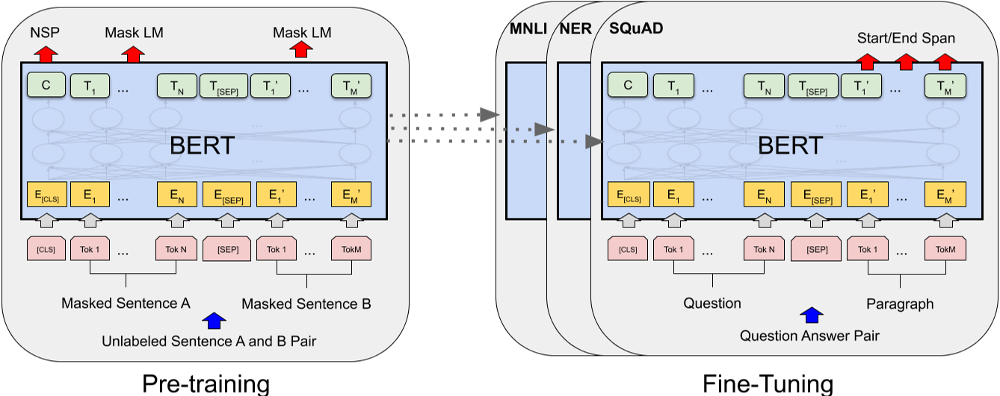
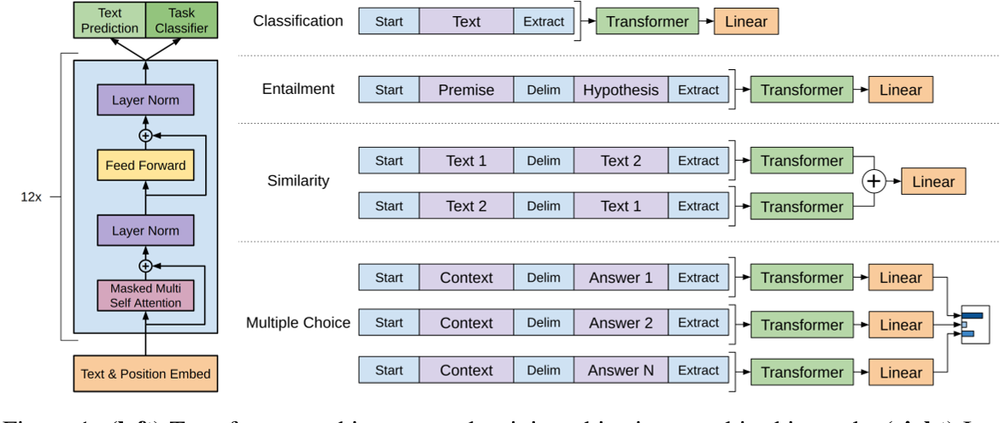

补下大模型的基础，读一下经典的大模型论文并作总结，包括下述几篇论文，在李沐老师PPT上偷了这张图，

-
Attention is all you need （Transformer）
-
BERT: Pre-training of Deep Bidirectional Transformers for Language Understanding （BERT）
-
Improving Language Understanding by Generative Pre-Training （GPT1）
接下来先看Attention is all you need，也就是Transformer这篇文章，
[NIPS] Attention is all you need

之前本科的时候很早就看过Tranformer相关的论文，总的算下来这是第三次通读这篇文章了，相比于前两次聚焦于文章的写作，模型的架构，代码的实现等等，这次多了一些感慨。正如作者在摘要中所说，Transformer是一个
simple
的网络，但正是这样一个简单的网络，简单的架构，作为一个起点，就像萨拉热窝的那颗子弹，掀起了令人难以置信的人工智能发展的浪潮。以至于我开始幻想，在我的有生之年真的可以看见，甚至参与到通用强人工智能的出现中来。好的，还是闲话少说，这里就不再详细过Transformer的模型了，主要是讨论几个我阅读过程中产生的疑惑，
- encoder-decoder结构
正如上图所言，Tansformer是一个典型的编码器解码器的结构，但是和计算机视觉中常见的encoder-decoder结构不同，计算机视觉中这类的结构通常伴随着数据维度的变化，在编码器端一般是通道数的增加以及特征图size的减小，解码器端则相反。可是Transformer整体过下来，它的每个block的输入和输出的大小一直是没有改变的，网上也没有找到相关的讨论或者解答，我个人认为，这两者的不同是因为任务的不同，Tansformer处理序列任务，序列的长度本身就带有一定的信息，所以保持不变的维度，一方面简化了模型的设计，另一方面可以更好的保留序列长度的信息。
当然，如果只讨论Transformer模型的设计，当然每个block的输入输出的维度不可以变化，我在前面讨论的意思主要是，为什么不设计CV的那种形式，同时肯定也伴随着一些其他设计的改变。
- Masked Multi-Head self-attention
每个文章的初读者大概都会对它这个掩码注意力的掩码部分产生疑惑，这其实主要是因为这篇文章的作者在写作的时候并没有想到文章会有如此大的影响力，它所计划面对的读者主要还是之前做过机器翻译，或者其他的序列任务的那群人，所以少阐述了一些基础知识。
Transformer在推理部分的伪代码应该是这样的，
def inference(input, output_len):
model = make_model()
output = torch.ones(1)
encoder_output = model.encoder(input, output)
for i in range(output_len):
tmp = model.decoder(input, output)
output = torch.cat(output, tmp)
return output
不是像常见的CV的模型那样，直接
output = model(input)
，而是一次一次的迭代，每次只预测下一个词，这就是所谓自回归auto-regressive。下一步来解释mask其实就很好理解了，在训练的时候，我其实知道想要的output是什么，所以模型输入的output就是lable，需要mask掉还没有推理出的部分，而测试的时候，模型是一个词一个词的预测的，这时候输入的output，就是之前时刻的输出加上padding把维度塞满。
[arXiv] BERT: Pre-training of Deep Bidirectional Transformers for Language Understanding

BERT的结构其实就是一个Transformer的编码器，它在文中甚至都没有对这方面作过多的介绍，而是直接引用了Tranformer的论文和代码。确实，BERT这篇文章我认为不应该重点关注它的结构，而应该关注以下两个方面，
- bidirectional Transformer
相比于Tranformer以及GPT这类自回归的模型，一步一步通过之前的词预测下一个词，也就是BERT所说的，它们只能看到左边的信息，BERT可以做到双向的信息获取，类似于完形填空，关注的是上下文的信息。所以BERT无论是在训练的时候，还是在推理的时候，都和前面讲的自回归的模型不同，BERT是输入一个句子直接得到一个同样维度的对应输出，而不是一步一步的迭代。
当然大家也可以发现，对于有些任务双向信息其实是不存在的，如果是理解类的任务当然好，比如预训练中的Next Sentence Prediction，但如果遇到就是需要一个词一个词往外蹦的这类任务，比如机器翻译，BERT可能表现就不是那么好了。
- Pre-training BERT
除了输入输出上的设计，要理解上下文信息，当然要做对应的预训练，大语言模型预训练应该选择什么任务一直是很重要的问题，BERT选择了两个任务，一个是Masked Language Model，把一个句子中的一些词 掩去，然后让BERT输出对这些词的预测，另一个是前面提到的NSP，输入两个句子，判断它们是否是连续的关系。前者的选择其实很顺理成章，做完形填空来提高理解上下文的能力，我们在外语学习中也会做这样的操作，后者的选择我认为是考虑到在可能的测试集中存在的多句子的任务，又不可能在文本蕴含之类的任务上直接做训练，因为后面还有微调的步骤，所以这里找了一个最简单的两个句子的任务做预训练。
Improving Language Understanding by Generative Pre-Training 和 Language Models are Unsupervised Multitask/Few-Shot Learners

GPT1/2/3三篇文章我打算放在一起讨论，因为三篇在整体的设计上其实是类似，差别主要在讲的故事，模型的参数量以及数据集的规模上。与BERT相同，GPT应该的关注的点也不是它使用了Transformer的解码器，而应该是以下三个方面，
- GPT有没有双向或者说学习上下文的能力
按BERT的说法，GPT是个单向的模型，只能从左看到右，但是我们考虑两者都跑过实验的文本蕴含（Entailment）的任务，输入两句话判断它们间的关系，在这类任务上，自编码的模型也好，自回归的模型也罢，都是从一个输入直接得到一个概率，BERT比GPT在这类任务上多的只是预训练的步骤中做了个完形填空。
- Pre-training
GPT1的预训练很简单，就是个语言模型，预测下一个词的概率，GPT2/3保持了这一观点，一以贯之的继续使用语言模型来作预训练
- Few-Shot Learner
以前在计算机视觉中就听过one-shot或者few-shot的概念，但是和GPT系列中的Few-shot有所不同，GPT中Few-Shot是把特定任务的少量样本作为提示词输入模型，同时不做训练，不改编模型的参数，而CV中的Few-shot通常是把这些少量的样本纳入到训练过程中来，需要改变模型的参数。
GPT2和3虽然分别想讲多任务学习和少样本学习的故事，但在模型和训练的设计上实际相比GPT1没有作出更多的改变
总结
读了这几篇文章，心生很多感慨，一方面感慨于Transformer刚发表的时候它的作者肯定也想不到会产生如此广泛的影响，另一方面也感慨于OpenAI“重剑无锋”式的设计理念。在补了大模型的几篇基础论文后，接下计划读三个方面的文章，一个是视觉大语言模型和VIT相关的文章，一个是RAG，特别是多模态RAG相关的文章，后又就是扩散模型有点感兴趣，打算读两篇
参考
-
The Annotated Transformer （对Transformer论文的注释和pytorch的代码实现）